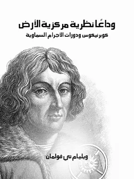

وداعًا نظرية مركزية الأرض: كوبرنيكوس ودورات الأجرام السماوية

قراءة عربية أصلية محددة النطاق في الصفحات 13 إلى 18 من ملف PDF المرتبط، وليست تلخيصا كاملا للكتاب. نناقش ما تدعمه هذه المقاطع فقط.
كوبرنيكوس الذي لم يوقف الشمس بالضبط
يستهل فولمان كتابه بملاحظات في المصطلحات: كلمة «الأرض» تقصد بها الكوكب الذي نعيش على سطحه لا العنصر الكلاسيكي، وعبارات مثل «كرة النجوم الثابتة» و«فلك الشمس الكروي» صيغت عناوين للتأكيد على أن أبطال الكتاب آمنوا بأن تلك الأماكن حقيقية أو مناطق محددة على أبعاد محددة من الأرض. ثم في مقال «لماذا يصرخ الكون» يسخر من مصير المفاهيم التي عفا عليها الزمن: لا بد أن يخصص لها موضع في متحف الأفكار، لكن ماذا لو كان الصدأ أصابها من البداية؟ لم تُعرض الطبعة الأولى من كتاب «عن دورات الأجرام السماوية» للبيع فلكيًا من الفاتيكان مطلقًا، وبعد خمسين عامًا فقط على ظهوره جاءت عمليات الرصد التي أجراها تيكو براهي لتبطل جداوله. إنه العالم بولندي المولد الذي أوقف الشمس وحرك الأرض، لكنه في الحقيقة لم يفعل ذلك بالضبط، ولا كان أول من جزم بمركزية الشمس، ولا كانت رسومه التخطيطية تامة الإتقان؛ فقد استمرت مسيرة العلم من بعده: جاء كبلر ليشوه أطره الدورانية، وجاء نيوتن ليجرف الحسابات الهندسية المتحذلقة مستعيضًا عنها بقواعد ذات قدرة هائلة.
زاوية وحدود القراءة
قراءة موجزة من ص ١٣ إلى ص ١٨ من أصل ٢٢٨ صفحة، تعرض مبحثًا من الكتاب، لا الكتاب كاملًا.
الطبعة والقراءة
هذه الترجمة العربية صادرة ومتاحة مجانًا بموجب اتفاق قانوني بين مؤسسة هنداوي ودار نشر دبليو دبليو نورتون أند كومباني، إنك. حقوق الترجمة محفوظة لمؤسسة هنداوي.
تنزيل PDF المجاني ↓ القراءة والمصدر الرسمي ↗